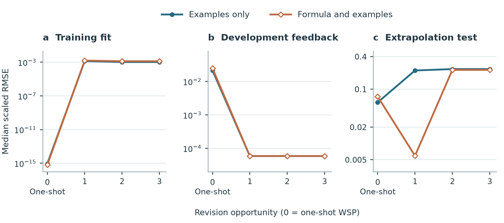

With examples only, allowing up to three revisions lowered outer-test error in 28 of 87 settings, left it unchanged in 35, and raised it in 24. The comparisons below distinguish exact 64-bit answers from small numerical errors.
For each task we average raw root mean squared error over its tested network sizes and three random starts, then sum the ten task averages. The chart ranks all 14 complete optimizer pipelines. The values depend on target magnitude, with Fibonacci dominating most totals.

Full totals and ranks · Contributions by task · New architecture choices · Measured inference costs
Round zero is the original one-shot weight-space programming (WSP) reply. Development data select revisions; their curve is not an untouched test. Stopped runs retain their last selected weights.

All recorded selected states · Accepted and rejected proposals · Training curves for every task
These fixed examples use the first random start and sixteen hidden units. Shading identifies the central training and development interval; curves show frozen predictions throughout the deployment domain.

Each iterative weight-space programming (WSP) run begins with its original one-shot answer. Astra can revise the weights at most three times using training and development diagnostics. Each size stops on exact training and development predictions, after two unaccepted revisions, or at the third attempt. Every reported outer input was hidden from the feedback loop. Full-batch gradient descent using backpropagation and the same endpoint refined with limited-memory Broyden–Fletcher–Goldfarb–Shanno (L-BFGS) are scored separately. The last two rows at each size also give these optimizers the full development pool as extra labeled training data.
Open a task to see its median across three starts. Exact counts require all coordinates of a prediction to match their 64-bit references. Root mean squared error (RMSE) is in target units. All sizes and three splits · Individual starts, feedback and independent confirmation · Revised paper · Table 4 · Explore the charts for each task.
| Size | Parameters | Final weights | Exact examples | Raw RMSE |
|---|---|---|---|---|
| 1 | 5 | One-shot WSP: Examples only | 0 / 4096 | 39.38 |
| 1 | 5 | Iterative WSP: Examples only | 0 / 4096 | 40.49 |
| 1 | 5 | One-shot WSP: Formula and examples | 0 / 4096 | 39.39 |
| 1 | 5 | Iterative WSP: Formula and examples | 0 / 4096 | 40.46 |
| 1 | 5 | Gradient descent (backpropagation) | 0 / 4096 | 51.81 |
| 1 | 5 | Gradient descent followed by L-BFGS | 0 / 4096 | 51.81 |
| 1 | 5 | Adam followed by full BFGS | 0 / 4096 | 51.8 |
| 1 | 5 | Trust-region least squares | 0 / 4096 | 39.96 |
| 1 | 5 | Gradient descent: full feedback pool | 0 / 4096 | 51.95 |
| 1 | 5 | Gradient descent followed by L-BFGS: full feedback pool | 0 / 4096 | 51.95 |
| 4 | 14 | One-shot WSP: Examples only | 0 / 4096 | 28.4 |
| 4 | 14 | Iterative WSP: Examples only | 0 / 4096 | 29.64 |
| 4 | 14 | One-shot WSP: Formula and examples | 0 / 4096 | 28.42 |
| 4 | 14 | Iterative WSP: Formula and examples | 0 / 4096 | 29.64 |
| 4 | 14 | Gradient descent (backpropagation) | 0 / 4096 | 39.1 |
| 4 | 14 | Gradient descent followed by L-BFGS | 0 / 4096 | 39.1 |
| 4 | 14 | Adam followed by full BFGS | 0 / 4096 | 37.3 |
| 4 | 14 | Trust-region least squares | 0 / 4096 | 32.94 |
| 4 | 14 | Gradient descent: full feedback pool | 0 / 4096 | 35.68 |
| 4 | 14 | Gradient descent followed by L-BFGS: full feedback pool | 0 / 4096 | 35.68 |
| 16 | 50 | One-shot WSP: Examples only | 0 / 4096 | 1.829 |
| 16 | 50 | Iterative WSP: Examples only | 0 / 4096 | 23.92 |
| 16 | 50 | One-shot WSP: Formula and examples | 0 / 4096 | 1.905 |
| 16 | 50 | Iterative WSP: Formula and examples | 0 / 4096 | 23.76 |
| 16 | 50 | Gradient descent (backpropagation) | 0 / 4096 | 34.78 |
| 16 | 50 | Gradient descent followed by L-BFGS | 0 / 4096 | 33.54 |
| 16 | 50 | Adam followed by full BFGS | 0 / 4096 | 29.52 |
| 16 | 50 | Trust-region least squares | 0 / 4096 | 31.92 |
| 16 | 50 | Gradient descent: full feedback pool | 0 / 4096 | 29.94 |
| 16 | 50 | Gradient descent followed by L-BFGS: full feedback pool | 0 / 4096 | 25.76 |
| Size | Parameters | Final weights | Exact examples | Raw RMSE |
|---|---|---|---|---|
| 1 | 5 | One-shot WSP: Examples only | 0 / 4096 | 3.578 |
| 1 | 5 | Iterative WSP: Examples only | 0 / 4096 | 3.03 |
| 1 | 5 | One-shot WSP: Formula and examples | 0 / 4096 | 3.579 |
| 1 | 5 | Iterative WSP: Formula and examples | 0 / 4096 | 3.029 |
| 1 | 5 | Gradient descent (backpropagation) | 0 / 4096 | 2.566 |
| 1 | 5 | Gradient descent followed by L-BFGS | 0 / 4096 | 2.566 |
| 1 | 5 | Adam followed by full BFGS | 0 / 4096 | 2.177 |
| 1 | 5 | Trust-region least squares | 0 / 4096 | 3.421 |
| 1 | 5 | Gradient descent: full feedback pool | 0 / 4096 | 3.001 |
| 1 | 5 | Gradient descent followed by L-BFGS: full feedback pool | 0 / 4096 | 3.034 |
| 4 | 14 | One-shot WSP: Examples only | 0 / 4096 | 2.601 |
| 4 | 14 | Iterative WSP: Examples only | 0 / 4096 | 3.08 |
| 4 | 14 | One-shot WSP: Formula and examples | 0 / 4096 | 2.601 |
| 4 | 14 | Iterative WSP: Formula and examples | 0 / 4096 | 3.084 |
| 4 | 14 | Gradient descent (backpropagation) | 0 / 4096 | 2.151 |
| 4 | 14 | Gradient descent followed by L-BFGS | 0 / 4096 | 2.446 |
| 4 | 14 | Adam followed by full BFGS | 0 / 4096 | 2.255 |
| 4 | 14 | Trust-region least squares | 0 / 4096 | 2.079 |
| 4 | 14 | Gradient descent: full feedback pool | 0 / 4096 | 2.611 |
| 4 | 14 | Gradient descent followed by L-BFGS: full feedback pool | 0 / 4096 | 3.02 |
| 16 | 50 | One-shot WSP: Examples only | 0 / 4096 | 0.1725 |
| 16 | 50 | Iterative WSP: Examples only | 0 / 4096 | 3.853 |
| 16 | 50 | One-shot WSP: Formula and examples | 0 / 4096 | 0.1724 |
| 16 | 50 | Iterative WSP: Formula and examples | 0 / 4096 | 3.847 |
| 16 | 50 | Gradient descent (backpropagation) | 0 / 4096 | 2.331 |
| 16 | 50 | Gradient descent followed by L-BFGS | 0 / 4096 | 2.525 |
| 16 | 50 | Adam followed by full BFGS | 0 / 4096 | 2.459 |
| 16 | 50 | Trust-region least squares | 0 / 4096 | 2.485 |
| 16 | 50 | Gradient descent: full feedback pool | 0 / 4096 | 2.728 |
| 16 | 50 | Gradient descent followed by L-BFGS: full feedback pool | 0 / 4096 | 3.797 |
| Size | Parameters | Final weights | Exact examples | Raw RMSE |
|---|---|---|---|---|
| 1 | 5 | One-shot WSP: Examples only | 0 / 2048 | 1.583e+09 |
| 1 | 5 | Iterative WSP: Examples only | 0 / 2048 | 1.583e+09 |
| 1 | 5 | One-shot WSP: Formula and examples | 0 / 2048 | 1.583e+09 |
| 1 | 5 | Iterative WSP: Formula and examples | 0 / 2048 | 1.583e+09 |
| 1 | 5 | Gradient descent (backpropagation) | 0 / 2048 | 1.583e+09 |
| 1 | 5 | Gradient descent followed by L-BFGS | 0 / 2048 | 1.583e+09 |
| 1 | 5 | Adam followed by full BFGS | 0 / 2048 | 1.583e+09 |
| 1 | 5 | Trust-region least squares | 0 / 2048 | 1.583e+09 |
| 1 | 5 | Gradient descent: full feedback pool | 0 / 2048 | 1.583e+09 |
| 1 | 5 | Gradient descent followed by L-BFGS: full feedback pool | 0 / 2048 | 1.583e+09 |
| 4 | 14 | One-shot WSP: Examples only | 0 / 2048 | 1.583e+09 |
| 4 | 14 | Iterative WSP: Examples only | 0 / 2048 | 1.583e+09 |
| 4 | 14 | One-shot WSP: Formula and examples | 0 / 2048 | 1.583e+09 |
| 4 | 14 | Iterative WSP: Formula and examples | 0 / 2048 | 1.583e+09 |
| 4 | 14 | Gradient descent (backpropagation) | 0 / 2048 | 1.583e+09 |
| 4 | 14 | Gradient descent followed by L-BFGS | 0 / 2048 | 1.583e+09 |
| 4 | 14 | Adam followed by full BFGS | 0 / 2048 | 1.583e+09 |
| 4 | 14 | Trust-region least squares | 0 / 2048 | 1.583e+09 |
| 4 | 14 | Gradient descent: full feedback pool | 0 / 2048 | 1.583e+09 |
| 4 | 14 | Gradient descent followed by L-BFGS: full feedback pool | 0 / 2048 | 1.583e+09 |
| 16 | 50 | One-shot WSP: Examples only | 0 / 2048 | 1.795e+09 |
| 16 | 50 | Iterative WSP: Examples only | 0 / 2048 | 1.583e+09 |
| 16 | 50 | One-shot WSP: Formula and examples | 0 / 2048 | 1.371e+09 |
| 16 | 50 | Iterative WSP: Formula and examples | 0 / 2048 | 1.583e+09 |
| 16 | 50 | Gradient descent (backpropagation) | 0 / 2048 | 1.583e+09 |
| 16 | 50 | Gradient descent followed by L-BFGS | 0 / 2048 | 1.583e+09 |
| 16 | 50 | Adam followed by full BFGS | 0 / 2048 | 1.583e+09 |
| 16 | 50 | Trust-region least squares | 0 / 2048 | 1.583e+09 |
| 16 | 50 | Gradient descent: full feedback pool | 0 / 2048 | 1.583e+09 |
| 16 | 50 | Gradient descent followed by L-BFGS: full feedback pool | 0 / 2048 | 1.583e+09 |
| Size | Parameters | Final weights | Exact examples | Raw RMSE |
|---|---|---|---|---|
| 1 | 5 | One-shot WSP: Examples only | 0 / 4096 | 2.099 |
| 1 | 5 | Iterative WSP: Examples only | 0 / 4096 | 1.719 |
| 1 | 5 | One-shot WSP: Formula and examples | 0 / 4096 | 2.099 |
| 1 | 5 | Iterative WSP: Formula and examples | 0 / 4096 | 1.714 |
| 1 | 5 | Gradient descent (backpropagation) | 0 / 4096 | 2.228 |
| 1 | 5 | Gradient descent followed by L-BFGS | 0 / 4096 | 2.228 |
| 1 | 5 | Adam followed by full BFGS | 0 / 4096 | 1.768 |
| 1 | 5 | Trust-region least squares | 0 / 4096 | 2.263 |
| 1 | 5 | Gradient descent: full feedback pool | 0 / 4096 | 1.779 |
| 1 | 5 | Gradient descent followed by L-BFGS: full feedback pool | 0 / 4096 | 1.778 |
| 4 | 14 | One-shot WSP: Examples only | 0 / 4096 | 0.2984 |
| 4 | 14 | Iterative WSP: Examples only | 0 / 4096 | 0.235 |
| 4 | 14 | One-shot WSP: Formula and examples | 0 / 4096 | 0.2984 |
| 4 | 14 | Iterative WSP: Formula and examples | 0 / 4096 | 0.227 |
| 4 | 14 | Gradient descent (backpropagation) | 0 / 4096 | 0.916 |
| 4 | 14 | Gradient descent followed by L-BFGS | 0 / 4096 | 0.618 |
| 4 | 14 | Adam followed by full BFGS | 0 / 4096 | 0.7406 |
| 4 | 14 | Trust-region least squares | 0 / 4096 | 0.7005 |
| 4 | 14 | Gradient descent: full feedback pool | 0 / 4096 | 0.425 |
| 4 | 14 | Gradient descent followed by L-BFGS: full feedback pool | 0 / 4096 | 0.3538 |
| 16 | 50 | One-shot WSP: Examples only | 0 / 4096 | 0.0004446 |
| 16 | 50 | Iterative WSP: Examples only | 0 / 4096 | 0.07692 |
| 16 | 50 | One-shot WSP: Formula and examples | 0 / 4096 | 0.0006805 |
| 16 | 50 | Iterative WSP: Formula and examples | 0 / 4096 | 0.07811 |
| 16 | 50 | Gradient descent (backpropagation) | 0 / 4096 | 0.6491 |
| 16 | 50 | Gradient descent followed by L-BFGS | 0 / 4096 | 0.3432 |
| 16 | 50 | Adam followed by full BFGS | 0 / 4096 | 0.5202 |
| 16 | 50 | Trust-region least squares | 0 / 4096 | 0.3945 |
| 16 | 50 | Gradient descent: full feedback pool | 0 / 4096 | 0.2571 |
| 16 | 50 | Gradient descent followed by L-BFGS: full feedback pool | 0 / 4096 | 0.117 |
| Size | Parameters | Final weights | Exact examples | Raw RMSE |
|---|---|---|---|---|
| 1 | 5 | One-shot WSP: Examples only | 1081 / 2048 | 1.214e-15 |
| 1 | 5 | Iterative WSP: Examples only | 1287 / 2048 | 3.894 |
| 1 | 5 | One-shot WSP: Formula and examples | 1153 / 2048 | 5.188 |
| 1 | 5 | Iterative WSP: Formula and examples | 1282 / 2048 | 3.818 |
| 1 | 5 | Gradient descent (backpropagation) | 0 / 2048 | 9.679 |
| 1 | 5 | Gradient descent followed by L-BFGS | 0 / 2048 | 9.679 |
| 1 | 5 | Adam followed by full BFGS | 0 / 2048 | 9.631 |
| 1 | 5 | Trust-region least squares | 398 / 2048 | 5.026 |
| 1 | 5 | Gradient descent: full feedback pool | 0 / 2048 | 9.638 |
| 1 | 5 | Gradient descent followed by L-BFGS: full feedback pool | 0 / 2048 | 9.638 |
| 2 | 9 | One-shot WSP: Examples only | 2048 / 2048 | 0 |
| 2 | 9 | Iterative WSP: Examples only | 2048 / 2048 | 0 |
| 2 | 9 | One-shot WSP: Formula and examples | 2048 / 2048 | 0 |
| 2 | 9 | Iterative WSP: Formula and examples | 2048 / 2048 | 0 |
| 2 | 9 | Gradient descent (backpropagation) | 0 / 2048 | 4.903 |
| 2 | 9 | Gradient descent followed by L-BFGS | 0 / 2048 | 4.196 |
| 2 | 9 | Adam followed by full BFGS | 1 / 2048 | 2.105 |
| 2 | 9 | Trust-region least squares | 324 / 2048 | 4.548 |
| 2 | 9 | Gradient descent: full feedback pool | 0 / 2048 | 4.958 |
| 2 | 9 | Gradient descent followed by L-BFGS: full feedback pool | 1 / 2048 | 4.014 |
| 4 | 17 | One-shot WSP: Examples only | 2048 / 2048 | 0 |
| 4 | 17 | Iterative WSP: Examples only | 2048 / 2048 | 0 |
| 4 | 17 | One-shot WSP: Formula and examples | 2048 / 2048 | 0 |
| 4 | 17 | Iterative WSP: Formula and examples | 2048 / 2048 | 0 |
| 4 | 17 | Gradient descent (backpropagation) | 0 / 2048 | 0.2665 |
| 4 | 17 | Gradient descent followed by L-BFGS | 2 / 2048 | 0.2661 |
| 4 | 17 | Adam followed by full BFGS | 32 / 2048 | 0.815 |
| 4 | 17 | Trust-region least squares | 344 / 2048 | 0.09209 |
| 4 | 17 | Gradient descent: full feedback pool | 0 / 2048 | 0.2396 |
| 4 | 17 | Gradient descent followed by L-BFGS: full feedback pool | 1 / 2048 | 0.2396 |
| Size | Parameters | Final weights | Exact examples | Raw RMSE |
|---|---|---|---|---|
| 1 | 5 | One-shot WSP: Examples only | 1097 / 2048 | 1.197e-15 |
| 1 | 5 | Iterative WSP: Examples only | 1288 / 2048 | 3.763 |
| 1 | 5 | One-shot WSP: Formula and examples | 1097 / 2048 | 1.197e-15 |
| 1 | 5 | Iterative WSP: Formula and examples | 1288 / 2048 | 3.763 |
| 1 | 5 | Gradient descent (backpropagation) | 0 / 2048 | 4.92 |
| 1 | 5 | Gradient descent followed by L-BFGS | 30 / 2048 | 4.77 |
| 1 | 5 | Adam followed by full BFGS | 223 / 2048 | 4.462 |
| 1 | 5 | Trust-region least squares | 443 / 2048 | 4.33 |
| 1 | 5 | Gradient descent: full feedback pool | 0 / 2048 | 4.802 |
| 1 | 5 | Gradient descent followed by L-BFGS: full feedback pool | 20 / 2048 | 4.102 |
| 2 | 9 | One-shot WSP: Examples only | 2048 / 2048 | 0 |
| 2 | 9 | Iterative WSP: Examples only | 2048 / 2048 | 0 |
| 2 | 9 | One-shot WSP: Formula and examples | 2048 / 2048 | 0 |
| 2 | 9 | Iterative WSP: Formula and examples | 2048 / 2048 | 0 |
| 2 | 9 | Gradient descent (backpropagation) | 0 / 2048 | 0.8305 |
| 2 | 9 | Gradient descent followed by L-BFGS | 14 / 2048 | 1.443e-13 |
| 2 | 9 | Adam followed by full BFGS | 50 / 2048 | 3.644 |
| 2 | 9 | Trust-region least squares | 769 / 2048 | 1.221e-15 |
| 2 | 9 | Gradient descent: full feedback pool | 1 / 2048 | 6.576e-13 |
| 2 | 9 | Gradient descent followed by L-BFGS: full feedback pool | 1 / 2048 | 6.576e-13 |
| 4 | 17 | One-shot WSP: Examples only | 2048 / 2048 | 0 |
| 4 | 17 | Iterative WSP: Examples only | 2048 / 2048 | 0 |
| 4 | 17 | One-shot WSP: Formula and examples | 2048 / 2048 | 0 |
| 4 | 17 | Iterative WSP: Formula and examples | 2048 / 2048 | 0 |
| 4 | 17 | Gradient descent (backpropagation) | 0 / 2048 | 0.7539 |
| 4 | 17 | Gradient descent followed by L-BFGS | 2 / 2048 | 0.004348 |
| 4 | 17 | Adam followed by full BFGS | 0 / 2048 | 2.531e-13 |
| 4 | 17 | Trust-region least squares | 366 / 2048 | 2.914e-15 |
| 4 | 17 | Gradient descent: full feedback pool | 0 / 2048 | 0.004662 |
| 4 | 17 | Gradient descent followed by L-BFGS: full feedback pool | 2 / 2048 | 6.14e-05 |
| Size | Parameters | Final weights | Exact examples | Raw RMSE |
|---|---|---|---|---|
| 1 | 3 | One-shot WSP: Examples only | 2048 / 2048 | 0 |
| 1 | 3 | Iterative WSP: Examples only | 2048 / 2048 | 0 |
| 1 | 3 | One-shot WSP: Formula and examples | 2048 / 2048 | 0 |
| 1 | 3 | Iterative WSP: Formula and examples | 2048 / 2048 | 0 |
| 1 | 3 | Gradient descent (backpropagation) | 0 / 2048 | 7.018e-14 |
| 1 | 3 | Gradient descent followed by L-BFGS | 0 / 2048 | 7.018e-14 |
| 1 | 3 | Adam followed by full BFGS | 0 / 2048 | 2.266e-14 |
| 1 | 3 | Trust-region least squares | 65 / 2048 | 1.728e-15 |
| 1 | 3 | Gradient descent: full feedback pool | 0 / 2048 | 4.982e-14 |
| 1 | 3 | Gradient descent followed by L-BFGS: full feedback pool | 0 / 2048 | 4.982e-14 |
| 2 | 8 | One-shot WSP: Examples only | 2048 / 2048 | 0 |
| 2 | 8 | Iterative WSP: Examples only | 2048 / 2048 | 0 |
| 2 | 8 | One-shot WSP: Formula and examples | 2048 / 2048 | 0 |
| 2 | 8 | Iterative WSP: Formula and examples | 2048 / 2048 | 0 |
| 2 | 8 | Gradient descent (backpropagation) | 0 / 2048 | 1.013e-13 |
| 2 | 8 | Gradient descent followed by L-BFGS | 0 / 2048 | 1.013e-13 |
| 2 | 8 | Adam followed by full BFGS | 23 / 2048 | 1.951e-15 |
| 2 | 8 | Trust-region least squares | 17 / 2048 | 2.047e-15 |
| 2 | 8 | Gradient descent: full feedback pool | 0 / 2048 | 1.073e-13 |
| 2 | 8 | Gradient descent followed by L-BFGS: full feedback pool | 0 / 2048 | 2.99e-14 |
| Size | Parameters | Final weights | Exact examples | Raw RMSE |
|---|---|---|---|---|
| 1 | 3 | One-shot WSP: Examples only | 0 / 32 | 3.172e+12 |
| 1 | 3 | Iterative WSP: Examples only | 0 / 32 | 1.33e+09 |
| 1 | 3 | One-shot WSP: Formula and examples | 0 / 32 | 3.173e+12 |
| 1 | 3 | Iterative WSP: Formula and examples | 0 / 32 | 1.33e+09 |
| 1 | 3 | Gradient descent (backpropagation) | 0 / 32 | 3.173e+12 |
| 1 | 3 | Gradient descent followed by L-BFGS | 0 / 32 | 3.173e+12 |
| 1 | 3 | Adam followed by full BFGS | 0 / 32 | 3.173e+12 |
| 1 | 3 | Trust-region least squares | 0 / 32 | 2.386e+12 |
| 1 | 3 | Gradient descent: full feedback pool | 0 / 32 | 2.386e+12 |
| 1 | 3 | Gradient descent followed by L-BFGS: full feedback pool | 0 / 32 | 2.386e+12 |
| 2 | 8 | One-shot WSP: Examples only | 32 / 32 | 0 |
| 2 | 8 | Iterative WSP: Examples only | 32 / 32 | 0 |
| 2 | 8 | One-shot WSP: Formula and examples | 32 / 32 | 0 |
| 2 | 8 | Iterative WSP: Formula and examples | 32 / 32 | 0 |
| 2 | 8 | Gradient descent (backpropagation) | 0 / 32 | 2.436e+10 |
| 2 | 8 | Gradient descent followed by L-BFGS | 0 / 32 | 0.07152 |
| 2 | 8 | Adam followed by full BFGS | 0 / 32 | 0.2688 |
| 2 | 8 | Trust-region least squares | 0 / 32 | 0.0102 |
| 2 | 8 | Gradient descent: full feedback pool | 0 / 32 | 4.984e+09 |
| 2 | 8 | Gradient descent followed by L-BFGS: full feedback pool | 0 / 32 | 0.02501 |
| 3 | 15 | One-shot WSP: Examples only | 32 / 32 | 0 |
| 3 | 15 | Iterative WSP: Examples only | 32 / 32 | 0 |
| 3 | 15 | One-shot WSP: Formula and examples | 32 / 32 | 0 |
| 3 | 15 | Iterative WSP: Formula and examples | 32 / 32 | 0 |
| 3 | 15 | Gradient descent (backpropagation) | 0 / 32 | 4.942e+11 |
| 3 | 15 | Gradient descent followed by L-BFGS | 0 / 32 | 0.02792 |
| 3 | 15 | Adam followed by full BFGS | 0 / 32 | 0.2124 |
| 3 | 15 | Trust-region least squares | 1 / 32 | 0.002384 |
| 3 | 15 | Gradient descent: full feedback pool | 0 / 32 | 1.198e+11 |
| 3 | 15 | Gradient descent followed by L-BFGS: full feedback pool | 0 / 32 | 0.007356 |
| Size | Parameters | Final weights | Exact examples | Raw RMSE |
|---|---|---|---|---|
| 2 | 8 | One-shot WSP: Examples only | 0 / 32 | 1.543e+09 |
| 2 | 8 | Iterative WSP: Examples only | 0 / 32 | 4052 |
| 2 | 8 | One-shot WSP: Formula and examples | 0 / 32 | 1.415e+09 |
| 2 | 8 | Iterative WSP: Formula and examples | 0 / 32 | 4007 |
| 2 | 8 | Gradient descent (backpropagation) | 0 / 32 | 1.472e+09 |
| 2 | 8 | Gradient descent followed by L-BFGS | 0 / 32 | 1.472e+09 |
| 2 | 8 | Adam followed by full BFGS | 0 / 32 | 1.472e+09 |
| 2 | 8 | Trust-region least squares | 0 / 32 | 1.472e+09 |
| 2 | 8 | Gradient descent: full feedback pool | 0 / 32 | 2.156e+05 |
| 2 | 8 | Gradient descent followed by L-BFGS: full feedback pool | 0 / 32 | 5.301e+05 |
| 3 | 15 | One-shot WSP: Examples only | 32 / 32 | 0 |
| 3 | 15 | Iterative WSP: Examples only | 32 / 32 | 0 |
| 3 | 15 | One-shot WSP: Formula and examples | 32 / 32 | 0 |
| 3 | 15 | Iterative WSP: Formula and examples | 32 / 32 | 0 |
| 3 | 15 | Gradient descent (backpropagation) | 0 / 32 | 8.301e+05 |
| 3 | 15 | Gradient descent followed by L-BFGS | 0 / 32 | 7.509e-08 |
| 3 | 15 | Adam followed by full BFGS | 0 / 32 | 2.118e-08 |
| 3 | 15 | Trust-region least squares | 0 / 32 | 5.78e-10 |
| 3 | 15 | Gradient descent: full feedback pool | 0 / 32 | 2.173e+05 |
| 3 | 15 | Gradient descent followed by L-BFGS: full feedback pool | 0 / 32 | 4.243e-10 |
| 4 | 24 | One-shot WSP: Examples only | 32 / 32 | 0 |
| 4 | 24 | Iterative WSP: Examples only | 32 / 32 | 0 |
| 4 | 24 | One-shot WSP: Formula and examples | 32 / 32 | 0 |
| 4 | 24 | Iterative WSP: Formula and examples | 32 / 32 | 0 |
| 4 | 24 | Gradient descent (backpropagation) | 0 / 32 | 1.594e+07 |
| 4 | 24 | Gradient descent followed by L-BFGS | 0 / 32 | 6.883e-07 |
| 4 | 24 | Adam followed by full BFGS | 0 / 32 | 2.609e-07 |
| 4 | 24 | Trust-region least squares | 0 / 32 | 3.132e-05 |
| 4 | 24 | Gradient descent: full feedback pool | 0 / 32 | 2.881e+05 |
| 4 | 24 | Gradient descent followed by L-BFGS: full feedback pool | 0 / 32 | 1.265e-09 |
| Size | Parameters | Final weights | Exact examples | Raw RMSE |
|---|---|---|---|---|
| 4 | 32 | One-shot WSP: Examples only | 715 / 2048 | 2.987 |
| 4 | 32 | Iterative WSP: Examples only | 200 / 2048 | 2.273 |
| 4 | 32 | One-shot WSP: Formula and examples | 715 / 2048 | 2.653 |
| 4 | 32 | Iterative WSP: Formula and examples | 95 / 2048 | 2.089 |
| 4 | 32 | Gradient descent (backpropagation) | 29 / 2048 | 4.997 |
| 4 | 32 | Gradient descent followed by L-BFGS | 46 / 2048 | 5.861 |
| 4 | 32 | Adam followed by full BFGS | 14 / 2048 | 6.173 |
| 4 | 32 | Trust-region least squares | 32 / 2048 | 5.731 |
| 4 | 32 | Gradient descent: full feedback pool | 21 / 2048 | 2.502 |
| 4 | 32 | Gradient descent followed by L-BFGS: full feedback pool | 21 / 2048 | 2.252 |
| 5 | 40 | One-shot WSP: Examples only | 1096 / 2048 | 5.228e-16 |
| 5 | 40 | Iterative WSP: Examples only | 1091 / 2048 | 4.938e-16 |
| 5 | 40 | One-shot WSP: Formula and examples | 1096 / 2048 | 5.228e-16 |
| 5 | 40 | Iterative WSP: Formula and examples | 1096 / 2048 | 5.228e-16 |
| 5 | 40 | Gradient descent (backpropagation) | 26 / 2048 | 4.44 |
| 5 | 40 | Gradient descent followed by L-BFGS | 8 / 2048 | 6.088 |
| 5 | 40 | Adam followed by full BFGS | 12 / 2048 | 5.954 |
| 5 | 40 | Trust-region least squares | 4 / 2048 | 5.111 |
| 5 | 40 | Gradient descent: full feedback pool | 30 / 2048 | 2.192 |
| 5 | 40 | Gradient descent followed by L-BFGS: full feedback pool | 30 / 2048 | 2.199 |
| 6 | 48 | One-shot WSP: Examples only | 1096 / 2048 | 5.228e-16 |
| 6 | 48 | Iterative WSP: Examples only | 1091 / 2048 | 4.938e-16 |
| 6 | 48 | One-shot WSP: Formula and examples | 1096 / 2048 | 5.228e-16 |
| 6 | 48 | Iterative WSP: Formula and examples | 1096 / 2048 | 4.985e-16 |
| 6 | 48 | Gradient descent (backpropagation) | 0 / 2048 | 5.715 |
| 6 | 48 | Gradient descent followed by L-BFGS | 0 / 2048 | 5.517 |
| 6 | 48 | Adam followed by full BFGS | 0 / 2048 | 6.7 |
| 6 | 48 | Trust-region least squares | 0 / 2048 | 4.409 |
| 6 | 48 | Gradient descent: full feedback pool | 0 / 2048 | 2.18 |
| 6 | 48 | Gradient descent followed by L-BFGS: full feedback pool | 0 / 2048 | 1.701 |
Weight-space programming (WSP) directly assigns network coefficients. A pretrained language model, Astra, received the initial weights and labeled examples in each trial. One WSP condition also received the target formula. The gradient methods used the same examples and the same initial weights. Each setting fixes one task, architecture size and initialization seed. The 87 settings comprise 29 task–size combinations at three seeds. In 18 settings a dense hidden layer was trained to add or subtract.
Every method was asked to minimize one half of the mean squared training error after dividing each scalar error by the larger of one and the absolute target value. For each setting, two parameter arrays had an average loss strictly smaller than the loss at their midpoint. This witnesses nonconvexity in the network parameters. Training used twelve labeled examples for the continuous tasks and nine indices for Fibonacci and triangular numbers. WSP prompts gave accurate extrapolation as a secondary goal.
Backpropagation computes loss derivatives. Adaptive moment estimation (Adam) took 800 gradient steps before Broyden–Fletcher–Goldfarb–Shanno (BFGS) refinement, which estimates local curvature. Trust-region least squares used derivatives of individual residuals from the same Xavier start, a random initialization scaled to layer width. The two numerical methods have different evaluation budgets. Exactness requires equality with the reference rounded to binary64, the 64-bit floating-point format, coordinate by coordinate for a vector or a sequence.
A rectifier returns the larger of zero and its input. An affine connection adds a weighted input to an offset. For the twelve one-input networks that combine a direct affine connection with a single hidden rectifier, we independently solved the global training optimum in real arithmetic using exact fractions. The near-optimum column counts valid fits within 10−10 of that reference. It uses the same central examples as the primary trials.
| Method | Scored settings (of 87) | Median training loss | Near certified optimum | Exact on all training inputs | Exact on all held-out central / early inputs | Exact on all outer inputs |
|---|---|---|---|---|---|---|
| WSP with examples only | 87 | 4.07 × 10⁻³¹ | 1 / 12 | 30 | 30 | 30 |
| WSP with formula and examples | 87 | 2.19 × 10⁻³¹ | 2 / 12 | 30 | 30 | 30 |
| Adam followed by BFGS | 87 | 0.000534 | 1 / 12 | 0 | 0 | 0 |
| Trust-region least squares | 87 | 0.000323 | 5 / 12 | 2 | 0 | 0 |
| Initial Xavier weights | 87 | 0.683 | 0 / 12 | 0 | 0 | 0 |
A setting contributes one success only if every tested example is exactly correct on the indicated split. An unusable returned array has no numerical loss or error. The scored-setting denominator identifies evaluable outputs. The three-seed comparisons share held-out inputs and the proposals for several sizes can come from a single model response.
For training loss, differences within 10−10 count as ties. For outer predictions we compare the raw root mean squared error (RMSE), the square root of the mean squared prediction error in the target’s own units. Each sequence or vector coordinate contributes one error. An outer tie requires equal RMSE. Each comparison uses the same task, size, seed, examples and split for both methods.
| Direct writer | Gradient method | Quantity | Matched settings | Lower for WSP | Tie | Lower for gradient method |
|---|---|---|---|---|---|---|
| WSP with examples only | Adam followed by BFGS | Training loss | 87 | 48 | 33 | 6 |
| WSP with examples only | Adam followed by BFGS | Outer RMSE | 87 | 73 | 0 | 14 |
| WSP with examples only | Trust-region least squares | Training loss | 87 | 42 | 35 | 10 |
| WSP with examples only | Trust-region least squares | Outer RMSE | 87 | 76 | 0 | 11 |
| WSP with formula and examples | Adam followed by BFGS | Training loss | 87 | 47 | 35 | 5 |
| WSP with formula and examples | Adam followed by BFGS | Outer RMSE | 87 | 75 | 0 | 12 |
| WSP with formula and examples | Trust-region least squares | Training loss | 87 | 41 | 37 | 9 |
| WSP with formula and examples | Trust-region least squares | Outer RMSE | 87 | 75 | 0 | 12 |
Starting from the same initial weights, full-batch gradient descent takes a step against the derivative of the observed training loss. It may halve a step until the loss drops sufficiently, and makes at most 800 updates. Limited-memory BFGS (L-BFGS) uses up to ten recent parameter and gradient differences to estimate curvature. We ran it alone, after gradient descent, or after 800 Adam updates, with up to 1,000 refinement iterations per setting. Each refinement retains its lowest observed training loss among the starting point and accepted iterates, including the returned point if better.
| Training method | Median training loss | Training loss at most 10⁻¹⁰ (87) | Near certified optimum (12) | All training outputs exact (87) | All outer outputs exact (87) |
|---|---|---|---|---|---|
| Gradient descent alone | 0.0026 | 6 | 0 | 0 | 0 |
| Gradient descent followed by L-BFGS | 0.000546 | 32 | 1 | 0 | 0 |
| Adam alone | 0.00111 | 11 | 0 | 0 | 0 |
| Adam followed by L-BFGS | 0.000534 | 34 | 1 | 0 | 0 |
| L-BFGS directly from Xavier | 3.22 × 10⁻⁵ | 37 | 3 | 0 | 0 |
On sine, the median training loss across three sizes and three seeds fell from 0.0023 for gradient descent to 0.000534 after refinement. On those same settings the median outer RMSE increased from 2.34 to 2.52. Download the per-setting gradient descent and L-BFGS measurements.
For two-hidden-unit addition and subtraction, all twelve replies used the same algebraic rule. Let t be the sum or difference of the two inputs, and let R be a rectifier. One unit computes R(t), the other computes R(−t), and the output subtracts the second from the first. Every returned array matched all 2,048 outer pairs. The one-hidden-unit replies used an offset inside the rectifier and cancelled it at the output. None matched every outer pair. On sine, none of the eighteen returned networks satisfied the target’s exact odd symmetry across [−10,10], meaning that every proposed function differed somewhere from the negative of its value at the opposite input.
The archive contains the subtraction prompt, literal answer and event metadata under focus/arithmetic/trials/738159e5daa8 and the formula-given sine example under focus/objective/trials/ba89053bf8ca, with file suffixes .prompt.txt, .reply.txt and .meta.json. It also contains the reproducible coefficient checks in focus/coefficients/. The sixty records show one returned model message each and no recorded tool event. These observations establish the coefficients and their effect. Download the original prompts, replies, metadata and coefficient audit.
Expand a task to see all sizes. Each row reports medians over the scored starts shown. The exact comparison counts whole examples, and RMSE pools scalar errors within a start before taking the median across starts. “Central / early” means held-out central inputs or indices 9–32 for the two integer sequences. Their outer split is indices 33–64. The continuous outer split changes input magnitude from the central interval [−3,3] to magnitudes 3–10, restricted to positive inputs for self-power. A scalar slot is one free numerical parameter.
Affine input-to-output connection and rectified linear hidden units.
| Hidden units | Scalar slots | Method | Scored starts | Training loss | Train exact | Train RMSE | Central / early exact | Central / early RMSE | Outer exact | Outer RMSE |
|---|---|---|---|---|---|---|---|---|---|---|
| 1 | 5 | WSP with examples only | 3 | 0.02 | 0 / 12 | 0.792 | 0 / 2,048 | 1.25 | 0 / 4,096 | 39.4 |
| 1 | 5 | WSP with formula and examples | 3 | 0.02 | 0 / 12 | 0.792 | 0 / 2,048 | 1.25 | 0 / 4,096 | 39.4 |
| 1 | 5 | Adam followed by BFGS | 3 | 0.194 | 0 / 12 | 2.8 | 0 / 2,048 | 3.27 | 0 / 4,096 | 51.8 |
| 1 | 5 | Trust-region least squares | 3 | 0.0229 | 0 / 12 | 1.07 | 0 / 2,048 | 1.25 | 0 / 4,096 | 40 |
| 1 | 5 | Initial Xavier weights | 3 | 0.855 | 0 / 12 | 3.43 | 0 / 2,048 | 4.86 | 0 / 4,096 | 54 |
| 4 | 14 | WSP with examples only | 3 | 1.26 × 10⁻⁵ | 0 / 12 | 0.00612 | 0 / 2,048 | 0.278 | 0 / 4,096 | 28.4 |
| 4 | 14 | WSP with formula and examples | 3 | 1.26 × 10⁻⁵ | 0 / 12 | 0.00664 | 0 / 2,048 | 0.276 | 0 / 4,096 | 28.4 |
| 4 | 14 | Adam followed by BFGS | 3 | 0.00654 | 0 / 12 | 0.434 | 0 / 2,048 | 1.05 | 0 / 4,096 | 37.3 |
| 4 | 14 | Trust-region least squares | 3 | 0.00239 | 0 / 12 | 0.405 | 0 / 2,048 | 0.665 | 0 / 4,096 | 32.9 |
| 4 | 14 | Initial Xavier weights | 3 | 0.836 | 0 / 12 | 5.24 | 0 / 2,048 | 5.08 | 0 / 4,096 | 55.9 |
| 16 | 50 | WSP with examples only | 3 | 8.65 × 10⁻³³ | 7 / 12 | 2.9 × 10⁻¹⁶ | 0 / 2,048 | 0.383 | 0 / 4,096 | 1.83 |
| 16 | 50 | WSP with formula and examples | 3 | 3.21 × 10⁻³³ | 9 / 12 | 4.62 × 10⁻¹⁶ | 0 / 2,048 | 0.358 | 0 / 4,096 | 1.9 |
| 16 | 50 | Adam followed by BFGS | 3 | 1.08 × 10⁻⁵ | 0 / 12 | 0.00464 | 0 / 2,048 | 0.193 | 0 / 4,096 | 29.5 |
| 16 | 50 | Trust-region least squares | 3 | 0.000795 | 0 / 12 | 0.225 | 0 / 2,048 | 0.576 | 0 / 4,096 | 31.9 |
| 16 | 50 | Initial Xavier weights | 3 | 0.486 | 0 / 12 | 4.08 | 0 / 2,048 | 4.19 | 0 / 4,096 | 52.9 |
Affine input-to-output connection and rectified linear hidden units.
| Hidden units | Scalar slots | Method | Scored starts | Training loss | Train exact | Train RMSE | Central / early exact | Central / early RMSE | Outer exact | Outer RMSE |
|---|---|---|---|---|---|---|---|---|---|---|
| 1 | 5 | WSP with examples only | 3 | 0.0278 | 0 / 12 | 0.236 | 0 / 2,048 | 0.42 | 0 / 4,096 | 3.58 |
| 1 | 5 | WSP with formula and examples | 3 | 0.0278 | 0 / 12 | 0.236 | 0 / 2,048 | 0.42 | 0 / 4,096 | 3.58 |
| 1 | 5 | Adam followed by BFGS | 3 | 0.0798 | 0 / 12 | 0.399 | 0 / 2,048 | 0.386 | 0 / 4,096 | 2.18 |
| 1 | 5 | Trust-region least squares | 3 | 0.0282 | 0 / 12 | 0.238 | 0 / 2,048 | 0.443 | 0 / 4,096 | 3.42 |
| 1 | 5 | Initial Xavier weights | 3 | 1.99 | 0 / 12 | 2 | 0 / 2,048 | 2 | 0 / 4,096 | 8.44 |
| 4 | 14 | WSP with examples only | 3 | 5.58 × 10⁻⁶ | 0 / 12 | 0.00334 | 0 / 2,048 | 0.0766 | 0 / 4,096 | 2.6 |
| 4 | 14 | WSP with formula and examples | 3 | 2.8 × 10⁻⁶ | 0 / 12 | 0.00237 | 0 / 2,048 | 0.0977 | 0 / 4,096 | 2.6 |
| 4 | 14 | Adam followed by BFGS | 3 | 0.000576 | 0 / 12 | 0.0339 | 0 / 2,048 | 0.169 | 0 / 4,096 | 2.26 |
| 4 | 14 | Trust-region least squares | 3 | 0.000576 | 0 / 12 | 0.0339 | 0 / 2,048 | 0.171 | 0 / 4,096 | 2.08 |
| 4 | 14 | Initial Xavier weights | 3 | 3.12 | 0 / 12 | 2.5 | 0 / 2,048 | 2.28 | 0 / 4,096 | 8.69 |
| 16 | 50 | WSP with examples only | 3 | 2.25 × 10⁻¹⁷ | 0 / 12 | 6.7 × 10⁻⁹ | 0 / 2,048 | 0.0326 | 0 / 4,096 | 0.172 |
| 16 | 50 | WSP with formula and examples | 3 | 4.41 × 10⁻¹⁷ | 0 / 12 | 9.39 × 10⁻⁹ | 0 / 2,048 | 0.0326 | 0 / 4,096 | 0.172 |
| 16 | 50 | Adam followed by BFGS | 3 | 1.45 × 10⁻⁶ | 0 / 12 | 0.0017 | 0 / 2,048 | 0.106 | 0 / 4,096 | 2.46 |
| 16 | 50 | Trust-region least squares | 3 | 6.17 × 10⁻⁵ | 0 / 12 | 0.0111 | 0 / 2,048 | 0.0852 | 0 / 4,096 | 2.49 |
| 16 | 50 | Initial Xavier weights | 3 | 0.792 | 0 / 12 | 1.26 | 0 / 2,048 | 1.52 | 0 / 4,096 | 7.12 |
Affine input-to-output connection and rectified linear hidden units.
| Hidden units | Scalar slots | Method | Scored starts | Training loss | Train exact | Train RMSE | Central / early exact | Central / early RMSE | Outer exact | Outer RMSE |
|---|---|---|---|---|---|---|---|---|---|---|
| 1 | 5 | WSP with examples only | 3 | 0.00605 | 0 / 12 | 0.603 | 0 / 2,048 | 3.03 | 0 / 2,048 | 1.58 × 10⁹ |
| 1 | 5 | WSP with formula and examples | 3 | 0.00605 | 0 / 12 | 0.603 | 0 / 2,048 | 3.03 | 0 / 2,048 | 1.58 × 10⁹ |
| 1 | 5 | Adam followed by BFGS | 3 | 0.0796 | 0 / 12 | 3.03 | 0 / 2,048 | 5.59 | 0 / 2,048 | 1.58 × 10⁹ |
| 1 | 5 | Trust-region least squares | 3 | 0.0796 | 0 / 12 | 3.03 | 0 / 2,048 | 5.59 | 0 / 2,048 | 1.58 × 10⁹ |
| 1 | 5 | Initial Xavier weights | 3 | 0.813 | 0 / 12 | 6.22 | 0 / 2,048 | 8.47 | 0 / 2,048 | 1.58 × 10⁹ |
| 4 | 14 | WSP with examples only | 3 | 3.25 × 10⁻⁶ | 0 / 12 | 0.00863 | 0 / 2,048 | 1.23 | 0 / 2,048 | 1.58 × 10⁹ |
| 4 | 14 | WSP with formula and examples | 3 | 3.27 × 10⁻⁶ | 0 / 12 | 0.00863 | 0 / 2,048 | 1.23 | 0 / 2,048 | 1.58 × 10⁹ |
| 4 | 14 | Adam followed by BFGS | 3 | 0.0105 | 0 / 12 | 1.48 | 0 / 2,048 | 3.62 | 0 / 2,048 | 1.58 × 10⁹ |
| 4 | 14 | Trust-region least squares | 3 | 0.0767 | 0 / 12 | 2.67 | 0 / 2,048 | 5.59 | 0 / 2,048 | 1.58 × 10⁹ |
| 4 | 14 | Initial Xavier weights | 3 | 0.848 | 0 / 12 | 5.29 | 0 / 2,048 | 8.63 | 0 / 2,048 | 1.58 × 10⁹ |
| 16 | 50 | WSP with examples only | 3 | 7.57 × 10⁻¹⁸ | 0 / 12 | 2.32 × 10⁻⁸ | 0 / 2,048 | 0.355 | 0 / 2,048 | 1.79 × 10⁹ |
| 16 | 50 | WSP with formula and examples | 3 | 9.8 × 10⁻¹⁸ | 0 / 12 | 7.05 × 10⁻⁹ | 0 / 2,048 | 1.16 | 0 / 2,048 | 1.37 × 10⁹ |
| 16 | 50 | Adam followed by BFGS | 3 | 0.0219 | 0 / 12 | 2.07 | 0 / 2,048 | 4.45 | 0 / 2,048 | 1.58 × 10⁹ |
| 16 | 50 | Trust-region least squares | 3 | 0.0105 | 0 / 12 | 1.48 | 0 / 2,048 | 3.62 | 0 / 2,048 | 1.58 × 10⁹ |
| 16 | 50 | Initial Xavier weights | 3 | 0.415 | 0 / 12 | 5.68 | 0 / 2,048 | 7.51 | 0 / 2,048 | 1.58 × 10⁹ |
Affine input-to-output connection and rectified linear hidden units.
| Hidden units | Scalar slots | Method | Scored starts | Training loss | Train exact | Train RMSE | Central / early exact | Central / early RMSE | Outer exact | Outer RMSE |
|---|---|---|---|---|---|---|---|---|---|---|
| 1 | 5 | WSP with examples only | 3 | 0.0119 | 0 / 12 | 0.154 | 0 / 2,048 | 0.229 | 0 / 4,096 | 2.1 |
| 1 | 5 | WSP with formula and examples | 3 | 0.0119 | 0 / 12 | 0.154 | 0 / 2,048 | 0.229 | 0 / 4,096 | 2.1 |
| 1 | 5 | Adam followed by BFGS | 3 | 0.022 | 0 / 12 | 0.21 | 0 / 2,048 | 0.204 | 0 / 4,096 | 1.77 |
| 1 | 5 | Trust-region least squares | 3 | 0.0191 | 0 / 12 | 0.195 | 0 / 2,048 | 0.237 | 0 / 4,096 | 2.26 |
| 1 | 5 | Initial Xavier weights | 3 | 1.75 | 0 / 12 | 1.87 | 0 / 2,048 | 1.95 | 0 / 4,096 | 8.09 |
| 4 | 14 | WSP with examples only | 3 | 1.15 × 10⁻⁶ | 0 / 12 | 0.00151 | 0 / 2,048 | 0.0236 | 0 / 4,096 | 0.298 |
| 4 | 14 | WSP with formula and examples | 3 | 1.15 × 10⁻⁶ | 0 / 12 | 0.00151 | 0 / 2,048 | 0.0236 | 0 / 4,096 | 0.298 |
| 4 | 14 | Adam followed by BFGS | 3 | 9.17 × 10⁻⁵ | 0 / 12 | 0.0135 | 0 / 2,048 | 0.0923 | 0 / 4,096 | 0.741 |
| 4 | 14 | Trust-region least squares | 3 | 0.000107 | 0 / 12 | 0.0146 | 0 / 2,048 | 0.0423 | 0 / 4,096 | 0.701 |
| 4 | 14 | Initial Xavier weights | 3 | 3.58 | 0 / 12 | 2.68 | 0 / 2,048 | 2.42 | 0 / 4,096 | 7.84 |
| 16 | 50 | WSP with examples only | 3 | 2.71 × 10⁻¹⁴ | 0 / 12 | 2.33 × 10⁻⁷ | 0 / 2,048 | 0.0122 | 0 / 4,096 | 0.000445 |
| 16 | 50 | WSP with formula and examples | 3 | 1.1 × 10⁻¹⁶ | 0 / 12 | 1.48 × 10⁻⁸ | 0 / 2,048 | 0.0112 | 0 / 4,096 | 0.00068 |
| 16 | 50 | Adam followed by BFGS | 3 | 4.88 × 10⁻⁶ | 0 / 12 | 0.00312 | 0 / 2,048 | 0.0322 | 0 / 4,096 | 0.52 |
| 16 | 50 | Trust-region least squares | 3 | 2.51 × 10⁻⁵ | 0 / 12 | 0.00709 | 0 / 2,048 | 0.0273 | 0 / 4,096 | 0.394 |
| 16 | 50 | Initial Xavier weights | 3 | 0.621 | 0 / 12 | 1.11 | 0 / 2,048 | 1.3 | 0 / 4,096 | 7.25 |
Dense rectified linear hidden layer with two inputs and one output.
| Hidden units | Scalar slots | Method | Scored starts | Training loss | Train exact | Train RMSE | Central / early exact | Central / early RMSE | Outer exact | Outer RMSE |
|---|---|---|---|---|---|---|---|---|---|---|
| 1 | 5 | WSP with examples only | 3 | 3.92 × 10⁻³¹ | 2 / 12 | 1.02 × 10⁻¹⁵ | 333 / 2,048 | 1.02 × 10⁻¹⁵ | 1,081 / 2,048 | 1.21 × 10⁻¹⁵ |
| 1 | 5 | WSP with formula and examples | 3 | 1.94 × 10⁻³² | 8 / 12 | 2.31 × 10⁻¹⁶ | 1,262 / 2,048 | 0.431 | 1,153 / 2,048 | 5.19 |
| 1 | 5 | Adam followed by BFGS | 3 | 0.291 | 0 / 12 | 1.72 | 0 / 2,048 | 2.44 | 0 / 2,048 | 9.63 |
| 1 | 5 | Trust-region least squares | 3 | 1.92 × 10⁻³² | 5 / 12 | 5.48 × 10⁻¹⁶ | 727 / 2,048 | 0.344 | 398 / 2,048 | 5.03 |
| 1 | 5 | Initial Xavier weights | 3 | 0.409 | 0 / 12 | 2.34 | 0 / 2,048 | 2.64 | 0 / 2,048 | 10.5 |
| 2 | 9 | WSP with examples only | 3 | 0 | 12 / 12 | 0 | 2,048 / 2,048 | 0 | 2,048 / 2,048 | 0 |
| 2 | 9 | WSP with formula and examples | 3 | 0 | 12 / 12 | 0 | 2,048 / 2,048 | 0 | 2,048 / 2,048 | 0 |
| 2 | 9 | Adam followed by BFGS | 3 | 1.68 × 10⁻²⁸ | 0 / 12 | 3.15 × 10⁻¹⁴ | 1 / 2,048 | 0.335 | 1 / 2,048 | 2.1 |
| 2 | 9 | Trust-region least squares | 3 | 2.97 × 10⁻³² | 6 / 12 | 2.72 × 10⁻¹⁶ | 492 / 2,048 | 0.448 | 324 / 2,048 | 4.55 |
| 2 | 9 | Initial Xavier weights | 3 | 0.599 | 0 / 12 | 2.65 | 0 / 2,048 | 3.11 | 0 / 2,048 | 12.2 |
| 4 | 17 | WSP with examples only | 3 | 0 | 12 / 12 | 0 | 2,048 / 2,048 | 0 | 2,048 / 2,048 | 0 |
| 4 | 17 | WSP with formula and examples | 3 | 0 | 12 / 12 | 0 | 2,048 / 2,048 | 0 | 2,048 / 2,048 | 0 |
| 4 | 17 | Adam followed by BFGS | 3 | 3.87 × 10⁻³⁰ | 0 / 12 | 4.93 × 10⁻¹⁵ | 10 / 2,048 | 0.109 | 32 / 2,048 | 0.815 |
| 4 | 17 | Trust-region least squares | 3 | 1.02 × 10⁻³² | 7 / 12 | 2 × 10⁻¹⁶ | 550 / 2,048 | 0.0807 | 344 / 2,048 | 0.0921 |
| 4 | 17 | Initial Xavier weights | 3 | 0.803 | 0 / 12 | 2.6 | 0 / 2,048 | 3.38 | 0 / 2,048 | 13.4 |
Dense rectified linear hidden layer with two inputs and one output.
| Hidden units | Scalar slots | Method | Scored starts | Training loss | Train exact | Train RMSE | Central / early exact | Central / early RMSE | Outer exact | Outer RMSE |
|---|---|---|---|---|---|---|---|---|---|---|
| 1 | 5 | WSP with examples only | 3 | 8.52 × 10⁻³² | 2 / 12 | 7.28 × 10⁻¹⁶ | 315 / 2,048 | 1.03 × 10⁻¹⁵ | 1,097 / 2,048 | 1.2 × 10⁻¹⁵ |
| 1 | 5 | WSP with formula and examples | 3 | 8.52 × 10⁻³² | 2 / 12 | 7.28 × 10⁻¹⁶ | 315 / 2,048 | 1.03 × 10⁻¹⁵ | 1,097 / 2,048 | 1.2 × 10⁻¹⁵ |
| 1 | 5 | Adam followed by BFGS | 3 | 1.51 × 10⁻³¹ | 1 / 12 | 8.33 × 10⁻¹⁶ | 286 / 2,048 | 0.152 | 223 / 2,048 | 4.46 |
| 1 | 5 | Trust-region least squares | 3 | 3.36 × 10⁻³² | 4 / 12 | 5.91 × 10⁻¹⁶ | 585 / 2,048 | 0.106 | 443 / 2,048 | 4.33 |
| 1 | 5 | Initial Xavier weights | 3 | 0.532 | 0 / 12 | 2.8 | 0 / 2,048 | 2.42 | 0 / 2,048 | 9.3 |
| 2 | 9 | WSP with examples only | 3 | 0 | 12 / 12 | 0 | 2,048 / 2,048 | 0 | 2,048 / 2,048 | 0 |
| 2 | 9 | WSP with formula and examples | 3 | 0 | 12 / 12 | 0 | 2,048 / 2,048 | 0 | 2,048 / 2,048 | 0 |
| 2 | 9 | Adam followed by BFGS | 3 | 6.6 × 10⁻³² | 3 / 12 | 8.86 × 10⁻¹⁶ | 453 / 2,048 | 0.0888 | 50 / 2,048 | 3.64 |
| 2 | 9 | Trust-region least squares | 3 | 7.26 × 10⁻³³ | 7 / 12 | 3.17 × 10⁻¹⁶ | 860 / 2,048 | 3.29 × 10⁻¹⁶ | 769 / 2,048 | 1.22 × 10⁻¹⁵ |
| 2 | 9 | Initial Xavier weights | 3 | 0.477 | 0 / 12 | 2.66 | 0 / 2,048 | 2.69 | 0 / 2,048 | 10.3 |
| 4 | 17 | WSP with examples only | 3 | 0 | 12 / 12 | 0 | 2,048 / 2,048 | 0 | 2,048 / 2,048 | 0 |
| 4 | 17 | WSP with formula and examples | 3 | 0 | 12 / 12 | 0 | 2,048 / 2,048 | 0 | 2,048 / 2,048 | 0 |
| 4 | 17 | Adam followed by BFGS | 3 | 2.22 × 10⁻²⁸ | 0 / 12 | 6.16 × 10⁻¹⁴ | 3 / 2,048 | 6.14 × 10⁻¹⁴ | 0 / 2,048 | 2.53 × 10⁻¹³ |
| 4 | 17 | Trust-region least squares | 3 | 5.22 × 10⁻³³ | 5 / 12 | 3.45 × 10⁻¹⁶ | 557 / 2,048 | 6.73 × 10⁻¹⁶ | 366 / 2,048 | 2.91 × 10⁻¹⁵ |
| 4 | 17 | Initial Xavier weights | 3 | 0.205 | 0 / 12 | 1.68 | 0 / 2,048 | 1.49 | 0 / 2,048 | 5.75 |
Linear recurrent network with a learned input map and readout.
| State coordinates | Scalar slots | Method | Scored starts | Training loss | Train exact | Train RMSE | Central / early exact | Central / early RMSE | Outer exact | Outer RMSE |
|---|---|---|---|---|---|---|---|---|---|---|
| 1 | 3 | WSP with examples only | 3 | 0 | 12 / 12 | 0 | 2,048 / 2,048 | 0 | 2,048 / 2,048 | 0 |
| 1 | 3 | WSP with formula and examples | 3 | 0 | 12 / 12 | 0 | 2,048 / 2,048 | 0 | 2,048 / 2,048 | 0 |
| 1 | 3 | Adam followed by BFGS | 3 | 2.29 × 10⁻³⁰ | 0 / 12 | 5.07 × 10⁻¹⁵ | 0 / 2,048 | 5.79 × 10⁻¹⁵ | 0 / 2,048 | 2.27 × 10⁻¹⁴ |
| 1 | 3 | Trust-region least squares | 3 | 9.26 × 10⁻³³ | 1 / 12 | 3.14 × 10⁻¹⁶ | 86 / 2,048 | 4.23 × 10⁻¹⁶ | 65 / 2,048 | 1.73 × 10⁻¹⁵ |
| 1 | 3 | Initial Xavier weights | 3 | 0.565 | 0 / 12 | 3.02 | 0 / 2,048 | 3.48 | 0 / 2,048 | 13.5 |
| 2 | 8 | WSP with examples only | 3 | 0 | 12 / 12 | 0 | 2,048 / 2,048 | 0 | 2,048 / 2,048 | 0 |
| 2 | 8 | WSP with formula and examples | 3 | 0 | 12 / 12 | 0 | 2,048 / 2,048 | 0 | 2,048 / 2,048 | 0 |
| 2 | 8 | Adam followed by BFGS | 3 | 2.04 × 10⁻³² | 0 / 12 | 4.84 × 10⁻¹⁶ | 21 / 2,048 | 5.09 × 10⁻¹⁶ | 23 / 2,048 | 1.95 × 10⁻¹⁵ |
| 2 | 8 | Trust-region least squares | 3 | 1.96 × 10⁻³² | 0 / 12 | 5.09 × 10⁻¹⁶ | 21 / 2,048 | 5.19 × 10⁻¹⁶ | 17 / 2,048 | 2.05 × 10⁻¹⁵ |
| 2 | 8 | Initial Xavier weights | 3 | 0.683 | 0 / 12 | 3.25 | 0 / 2,048 | 3.62 | 0 / 2,048 | 14.1 |
Four input wires connected by rectified linear residual updates.
| Residual updates | Scalar slots | Method | Scored starts | Training loss | Train exact | Train RMSE | Central / early exact | Central / early RMSE | Outer exact | Outer RMSE |
|---|---|---|---|---|---|---|---|---|---|---|
| 4 | 32 | WSP with examples only | 3 | 0.0166 | 3 / 12 | 0.248 | 802 / 2,048 | 0.791 | 715 / 2,048 | 2.99 |
| 4 | 32 | WSP with formula and examples | 3 | 0.0401 | 3 / 12 | 0.362 | 802 / 2,048 | 0.655 | 715 / 2,048 | 2.65 |
| 4 | 32 | Adam followed by BFGS | 3 | 0.0191 | 0 / 12 | 0.371 | 9 / 2,048 | 1.47 | 14 / 2,048 | 6.17 |
| 4 | 32 | Trust-region least squares | 3 | 0.0194 | 0 / 12 | 0.29 | 27 / 2,048 | 1.5 | 32 / 2,048 | 5.73 |
| 4 | 32 | Initial Xavier weights | 3 | 2 | 0 / 12 | 2.7 | 3 / 2,048 | 2.9 | 4 / 2,048 | 11.3 |
| 5 | 40 | WSP with examples only | 3 | 4.14 × 10⁻³³ | 6 / 12 | 1.24 × 10⁻¹⁶ | 1,335 / 2,048 | 1.15 × 10⁻¹⁶ | 1,096 / 2,048 | 5.23 × 10⁻¹⁶ |
| 5 | 40 | WSP with formula and examples | 3 | 4.14 × 10⁻³³ | 6 / 12 | 1.24 × 10⁻¹⁶ | 1,335 / 2,048 | 1.15 × 10⁻¹⁶ | 1,096 / 2,048 | 5.23 × 10⁻¹⁶ |
| 5 | 40 | Adam followed by BFGS | 3 | 0.00439 | 0 / 12 | 0.133 | 16 / 2,048 | 1.53 | 12 / 2,048 | 5.95 |
| 5 | 40 | Trust-region least squares | 3 | 0.0107 | 0 / 12 | 0.303 | 3 / 2,048 | 1.27 | 4 / 2,048 | 5.11 |
| 5 | 40 | Initial Xavier weights | 3 | 2.79 | 0 / 12 | 3.54 | 0 / 2,048 | 3.85 | 0 / 2,048 | 15.3 |
| 6 | 48 | WSP with examples only | 3 | 4.14 × 10⁻³³ | 6 / 12 | 1.24 × 10⁻¹⁶ | 1,335 / 2,048 | 1.15 × 10⁻¹⁶ | 1,096 / 2,048 | 5.23 × 10⁻¹⁶ |
| 6 | 48 | WSP with formula and examples | 3 | 4.14 × 10⁻³³ | 6 / 12 | 1.24 × 10⁻¹⁶ | 1,335 / 2,048 | 1.15 × 10⁻¹⁶ | 1,096 / 2,048 | 5.23 × 10⁻¹⁶ |
| 6 | 48 | Adam followed by BFGS | 3 | 0.00262 | 0 / 12 | 0.145 | 0 / 2,048 | 1.64 | 0 / 2,048 | 6.7 |
| 6 | 48 | Trust-region least squares | 3 | 0.00811 | 0 / 12 | 0.213 | 0 / 2,048 | 1.09 | 0 / 2,048 | 4.41 |
| 6 | 48 | Initial Xavier weights | 3 | 2.43 | 0 / 12 | 3.47 | 0 / 2,048 | 3.58 | 0 / 2,048 | 14 |
Autonomous linear recurrence with learned initial state and readout.
| State coordinates | Scalar slots | Method | Scored starts | Training loss | Train exact | Train RMSE | Central / early exact | Central / early RMSE | Outer exact | Outer RMSE |
|---|---|---|---|---|---|---|---|---|---|---|
| 1 | 3 | WSP with examples only | 3 | 0.0165 | 0 / 9 | 0.296 | 0 / 24 | 2.57 × 10⁵ | 0 / 32 | 3.17 × 10¹² |
| 1 | 3 | WSP with formula and examples | 3 | 0.0165 | 0 / 9 | 0.297 | 0 / 24 | 2.57 × 10⁵ | 0 / 32 | 3.17 × 10¹² |
| 1 | 3 | Adam followed by BFGS | 3 | 0.389 | 0 / 9 | 5.51 | 0 / 24 | 5.66 × 10⁵ | 0 / 32 | 3.17 × 10¹² |
| 1 | 3 | Trust-region least squares | 3 | 0.441 | 0 / 9 | 8.91 | 0 / 24 | 5.66 × 10⁵ | 0 / 32 | 2.39 × 10¹² |
| 1 | 3 | Initial Xavier weights | 3 | 0.454 | 0 / 9 | 9.33 | 0 / 24 | 6.64 × 10⁵ | 0 / 32 | 5.03 × 10¹² |
| 2 | 8 | WSP with examples only | 3 | 0 | 9 / 9 | 0 | 24 / 24 | 0 | 32 / 32 | 0 |
| 2 | 8 | WSP with formula and examples | 3 | 0 | 9 / 9 | 0 | 24 / 24 | 0 | 32 / 32 | 0 |
| 2 | 8 | Adam followed by BFGS | 3 | 3.45 × 10⁻²⁹ | 0 / 9 | 4.92 × 10⁻¹⁴ | 0 / 24 | 2.91 × 10⁻⁸ | 0 / 32 | 0.269 |
| 2 | 8 | Trust-region least squares | 3 | 1.26 × 10⁻³² | 4 / 9 | 1.33 × 10⁻¹⁵ | 3 / 24 | 1.03 × 10⁻⁹ | 0 / 32 | 0.0102 |
| 2 | 8 | Initial Xavier weights | 3 | 0.443 | 0 / 9 | 8.91 | 0 / 24 | 5.66 × 10⁵ | 0 / 32 | 2.39 × 10¹² |
| 3 | 15 | WSP with examples only | 3 | 0 | 9 / 9 | 0 | 24 / 24 | 0 | 32 / 32 | 0 |
| 3 | 15 | WSP with formula and examples | 3 | 0 | 9 / 9 | 0 | 24 / 24 | 0 | 32 / 32 | 0 |
| 3 | 15 | Adam followed by BFGS | 3 | 1.37 × 10⁻²⁹ | 0 / 9 | 3.75 × 10⁻¹⁴ | 0 / 24 | 2.27 × 10⁻⁸ | 0 / 32 | 0.212 |
| 3 | 15 | Trust-region least squares | 3 | 3.58 × 10⁻³³ | 6 / 9 | 1.06 × 10⁻¹⁶ | 6 / 24 | 1.49 × 10⁻¹⁰ | 1 / 32 | 0.00238 |
| 3 | 15 | Initial Xavier weights | 3 | 0.426 | 0 / 9 | 8.9 | 0 / 24 | 5.66 × 10⁵ | 0 / 32 | 2.39 × 10¹² |
Autonomous linear recurrence with learned initial state and readout.
| State coordinates | Scalar slots | Method | Scored starts | Training loss | Train exact | Train RMSE | Central / early exact | Central / early RMSE | Outer exact | Outer RMSE |
|---|---|---|---|---|---|---|---|---|---|---|
| 2 | 8 | WSP with examples only | 3 | 0.000553 | 0 / 9 | 0.535 | 0 / 24 | 3.04 × 10⁴ | 0 / 32 | 1.54 × 10⁹ |
| 2 | 8 | WSP with formula and examples | 3 | 0.000547 | 0 / 9 | 0.485 | 0 / 24 | 2.98 × 10⁴ | 0 / 32 | 1.42 × 10⁹ |
| 2 | 8 | Adam followed by BFGS | 3 | 0.000546 | 0 / 9 | 0.491 | 0 / 24 | 3 × 10⁴ | 0 / 32 | 1.47 × 10⁹ |
| 2 | 8 | Trust-region least squares | 3 | 0.000546 | 0 / 9 | 0.491 | 0 / 24 | 3 × 10⁴ | 0 / 32 | 1.47 × 10⁹ |
| 2 | 8 | Initial Xavier weights | 3 | 0.436 | 0 / 9 | 17.9 | 0 / 24 | 285 | 0 / 32 | 1.32 × 10³ |
| 3 | 15 | WSP with examples only | 3 | 0 | 9 / 9 | 0 | 24 / 24 | 0 | 32 / 32 | 0 |
| 3 | 15 | WSP with formula and examples | 3 | 0 | 9 / 9 | 0 | 24 / 24 | 0 | 32 / 32 | 0 |
| 3 | 15 | Adam followed by BFGS | 3 | 2.94 × 10⁻³¹ | 1 / 9 | 7.8 × 10⁻¹⁵ | 0 / 24 | 4.05 × 10⁻¹⁰ | 0 / 32 | 2.12 × 10⁻⁸ |
| 3 | 15 | Trust-region least squares | 3 | 3.04 × 10⁻³² | 2 / 9 | 3.3 × 10⁻¹⁵ | 1 / 24 | 9.87 × 10⁻¹² | 0 / 32 | 5.78 × 10⁻¹⁰ |
| 3 | 15 | Initial Xavier weights | 3 | 0.417 | 0 / 9 | 17.9 | 0 / 24 | 285 | 0 / 32 | 1.32 × 10³ |
| 4 | 24 | WSP with examples only | 3 | 0 | 9 / 9 | 0 | 24 / 24 | 0 | 32 / 32 | 0 |
| 4 | 24 | WSP with formula and examples | 3 | 0 | 9 / 9 | 0 | 24 / 24 | 0 | 32 / 32 | 0 |
| 4 | 24 | Adam followed by BFGS | 3 | 7.26 × 10⁻³⁰ | 1 / 9 | 2.68 × 10⁻¹⁴ | 0 / 24 | 4.6 × 10⁻⁹ | 0 / 32 | 2.61 × 10⁻⁷ |
| 4 | 24 | Trust-region least squares | 3 | 5.55 × 10⁻³³ | 6 / 9 | 1.2 × 10⁻¹⁵ | 0 / 24 | 6.68 × 10⁻¹¹ | 0 / 32 | 3.13 × 10⁻⁵ |
| 4 | 24 | Initial Xavier weights | 3 | 0.494 | 0 / 9 | 18 | 0 / 24 | 288 | 0 / 32 | 1.39 × 10³ |
The earlier ten-task benchmark included 21 settings where prediction was affine in the trainable parameters. Its writing prompt prioritized maximum scaled error, while its gradient fits minimized the mean of squared scaled errors. The 87-setting comparison above repeats the WSP requests with the same primary training objective as the solvers and uses dense hidden-layer networks for arithmetic. In the historical table, “near” allows an additive training loss difference of 10−10.
| Historical method | Near certified global optimum (12 one-rectifier cases) | Near lowest measured training loss (90) | Whole outer sample exact (90) |
|---|---|---|---|
| WSP with examples only | 0 | 36 | 30 |
| WSP with formula and examples | 0 | 36 | 30 |
| Adam followed by BFGS | 1 | 48 | 0 |
| Trust-region least squares | 5 | 53 | 6 |
| Initial Xavier weights | 0 | 0 | 0 |
| Adam after 800 updates | 0 | 34 | 0 |
| Least squares initialized by examples-only WSP | 9 | 72 | 30 |
| Least squares initialized by formula-given WSP | 7 | 66 | 30 |
Download the historical 90-setting optimizer table, including 945 method–setting rows.